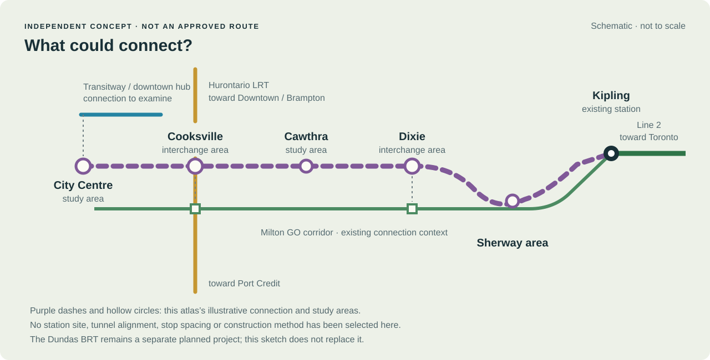
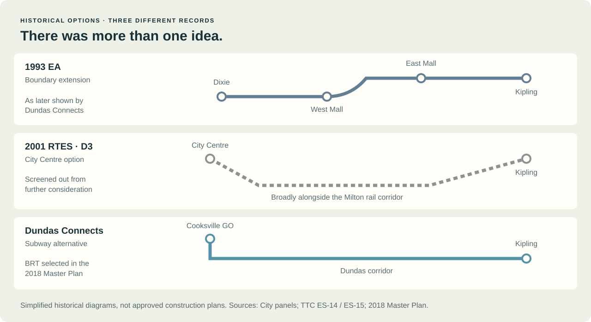
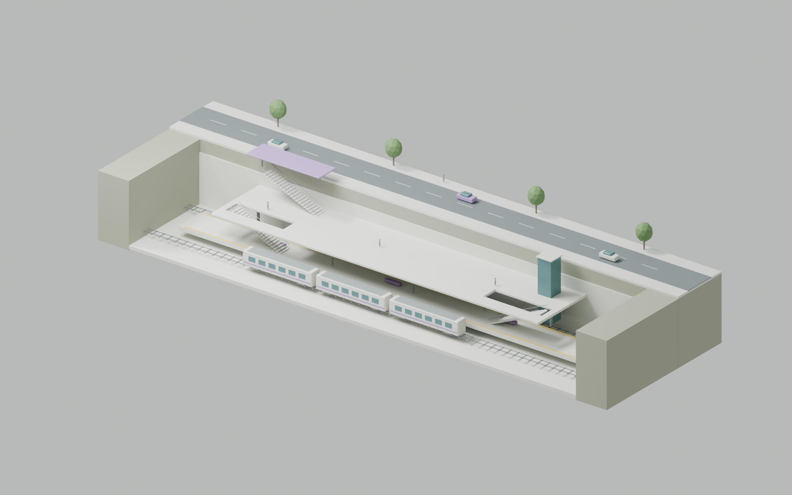
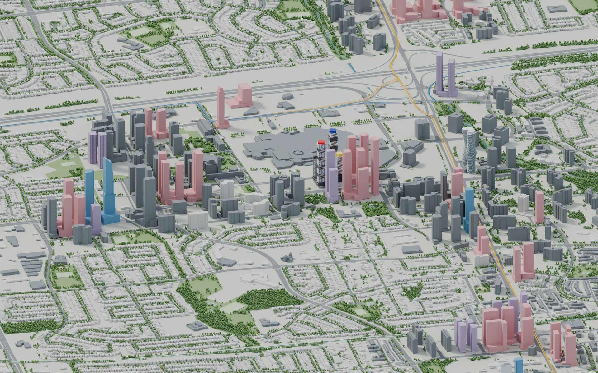
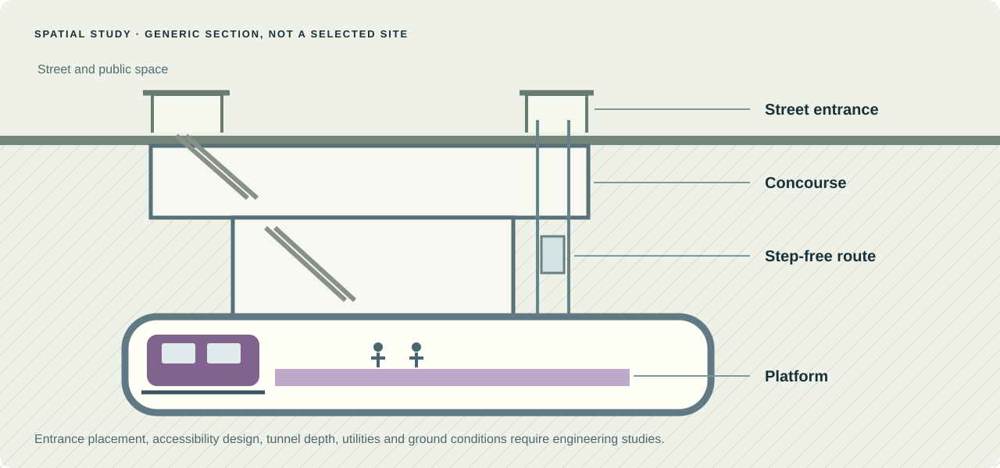
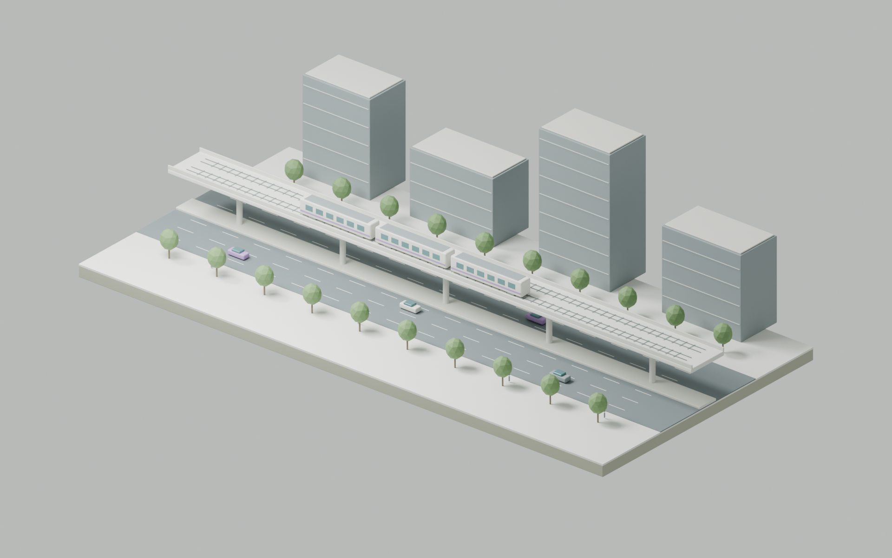
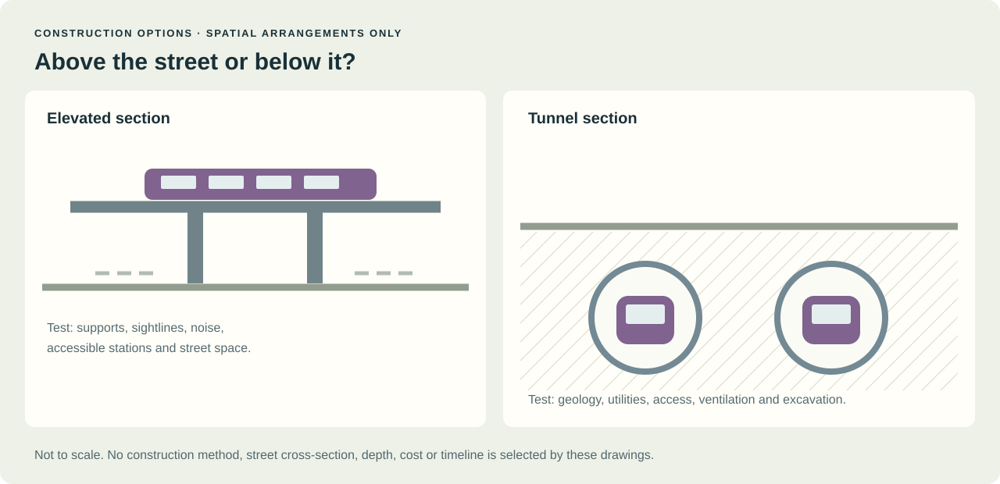

Reach the destination.
A potential station would need convenient access to homes, jobs, public spaces and the downtown transit network. The terminal location is deliberately unresolved.
AN INDEPENDENT VISUAL STUDY · 26 SEPTEMBER 2026
What could a connection to City Centre look like, and what has actually been studied?
This is an independent, unaffiliated exploration by Future Mississauga. It is not a City, TTC, Metrolinx or election-campaign plan. New routes, station areas and sections below are illustrative, with no selected alignment, approved stations, funding commitment or opening date implied.
01 / AN IDEA TO EXPLORE
This sketch asks how City Centre, Cooksville and the eastern part of the city might connect to Line 2 at Kipling. It uses the broad historical corridor as a starting point. The study areas and diagram layout are this atlas’s choices.

Diagram, not a geographic route. Purple dots are places to examine, not approved station sites. Transfers, intermediate stops and the connection into City Centre would need study. The planned Dundas BRT is a separate project and is not replaced by this illustration. Historical basis · BRT context
Open diagram ↗A potential station would need convenient access to homes, jobs, public spaces and the downtown transit network. The terminal location is deliberately unresolved.
Study the walking connection to GO and, at Cooksville, the Hurontario LRT. A dot on a diagram cannot establish a useful interchange.
The eastern connection would require coordination with Toronto and the transit agencies, including a feasible tie-in to the existing subway.
02 / THE CURRENT DISCUSSION
A political proposal, a request for more study and an approved construction project are different things.
Bonnie Crombie’s campaign proposed examining an extension from Kipling through Sherway Gardens into Mississauga. Its proposed business case would study routes, stations, demand, costs and construction options, including elevated construction in suitable parts of the Dundas corridor. That statement supplies no final alignment or selected station sites.
Read the campaign’s primary announcement ↗Toronto Council asked staff to report on timing and an approach to a possible Line 2 western extension to Sherway. This is evidence of a planning discussion, not approval to build a subway to Mississauga City Centre.
Read Council’s adopted direction ↗The established corridor plan still matters. Mississauga’s 2018 Dundas Connects Master Plan selected BRT. Metrolinx continues to present Dundas BRT as a separate project. Any new subway study would need to explain its relationship with those investments, the Hurontario LRT and regional rail. City plan · Metrolinx project
03 / THE RECORD, WITHOUT THE MYTHS
Historical drawings are useful evidence of what was considered. They should not be relabelled as today’s approved plan.

Original simplified redraws from public documents. The 2001 TTC D3 option reached City Centre but was screened out, citing regional planning priorities and its length and cost. The later Dundas subway alternative had a different endpoint: Cooksville GO. TTC ES-15 · City consultation panel
Open diagram ↗A February 2015 City review also reported finding no record of a government offer to extend the subway into Mississauga at no cost to the City. That finding does not mean subway extensions were never discussed, and it does not settle every historical disagreement. It does mean the familiar story of a free, ready-to-build subway being rejected should not be presented as established fact. Read the City’s historical review, report page 5.
04 / WHAT IT COULD FEEL LIKE
The atlas’s existing Downtown model provides the urban context. The separate section underneath explores the basic experience of entering a possible subway station. These two views are not spatially registered.

Illustrative 3D station section. This original model makes the layers easier to picture. Its form, dimensions, depth, trains and surrounding street are hypothetical; it is not registered to a Mississauga parcel or a proposed station design.
Download illustration ↓

The city picture retains the atlas’s mixed source dates, approximate building forms and documented gaps. The section is an original explanatory drawing, not a subsurface model. Streets, utilities, foundations, ground conditions and accessibility would require detailed investigation. Explore the sourced city model.
Open section ↗Test entrances against actual walking routes, crossings, public space and development parcels. Keep the journey legible beyond the station itself.
Test step-free circulation, passenger capacity and interchange walking distance. This drawing gives none of those design parameters a false precision.
Ground conditions, existing structures and utilities determine what can fit. A clean section drawing is not proof of construction feasibility.
05 / KEEP THE DESIGN QUESTION OPEN
The September 2026 campaign proposal includes examining elevated construction. These generic sections show what that choice changes spatially, without selecting a method or claiming a cost advantage.

Illustrative elevated corridor. The road, columns, guideway, trains and buildings are authored examples to explore spatial relationships. This is not a model of a selected Dundas alignment, a station, or an engineering feasibility finding.
Download illustration ↓
An actual options study would need to test structures, street access, noise, property impacts, utilities, geology, construction disruption and whole-life costs. Local bus access and the planned BRT also belong in that comparison.
Open sections ↗06 / THE PAPER TRAIL
Reviewed 26 September 2026. Public primary documents support the history and current context. The purple connection and spatial sections are authored illustrations. Private correspondence and newspaper scans are not published here.
Bonnie Crombie campaign · 2026-09-24
City of Toronto · 2024-03-20/21
Toronto Transit Commission · 2001-08-29
Toronto Transit Commission; archival mirror hosted by Transit Toronto · 2001-08
City of Mississauga · 2015-02-18
City of Mississauga · 2016–2018 consultation period
City of Mississauga · 2018-06-18 endorsement
Metrolinx · Current page reviewed 2026-09-26
Metrolinx · Current page reviewed 2026-09-26
{kind=link}